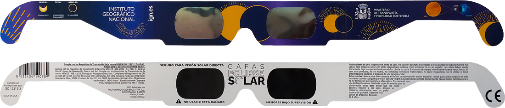
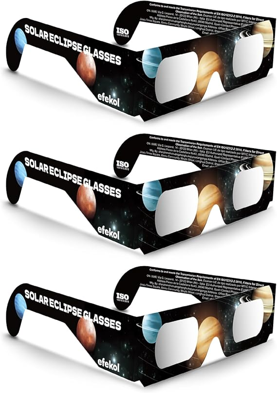
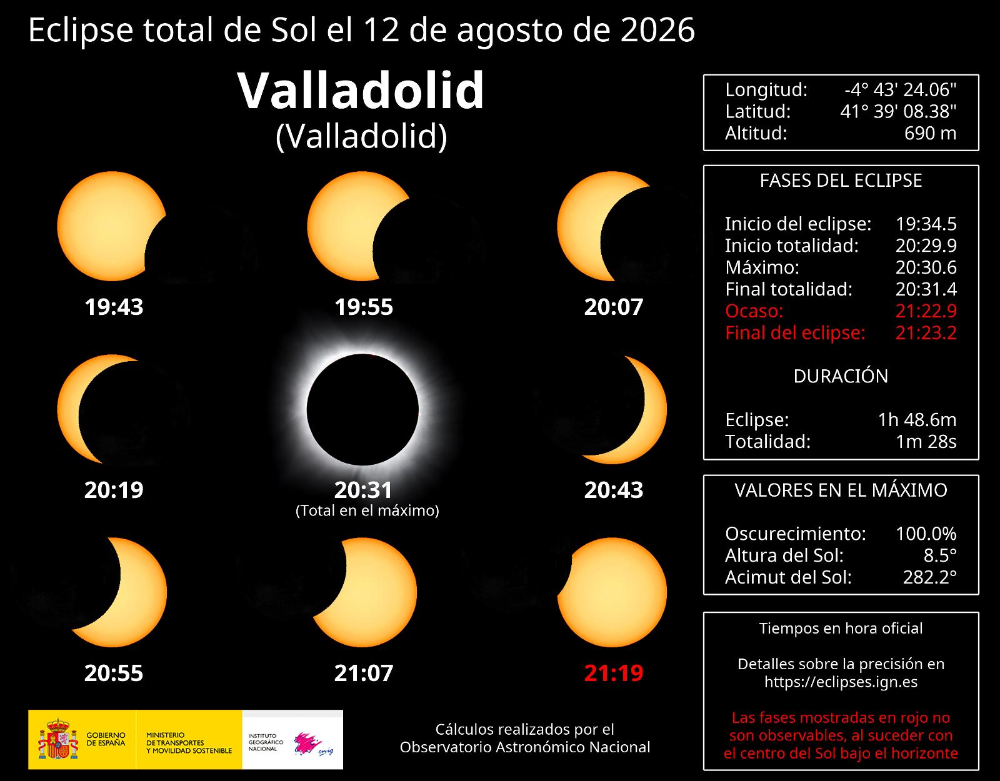
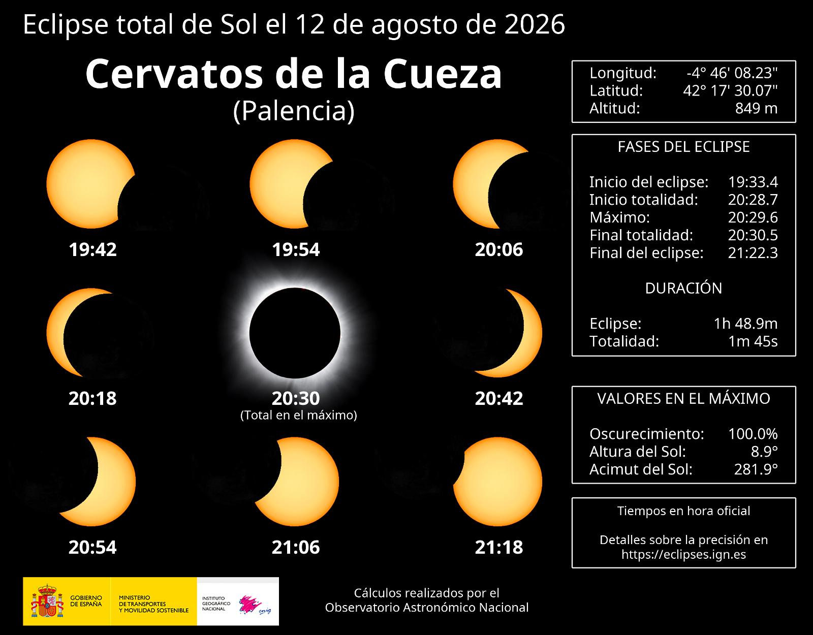
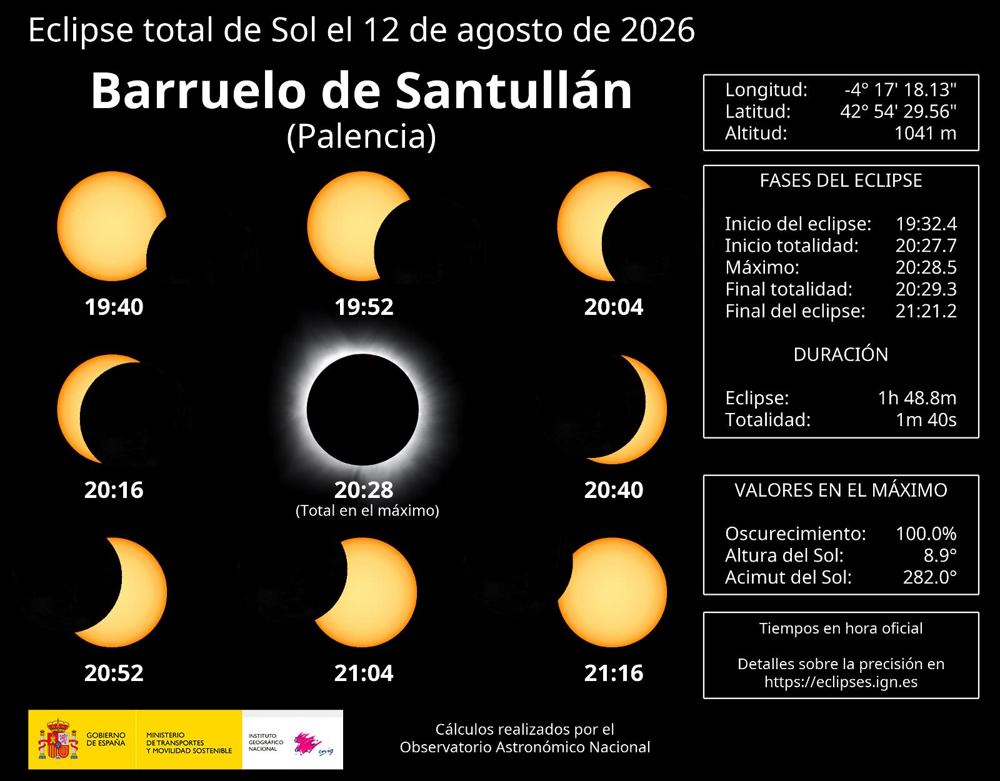

El Trienio Dorado de la Astronomía en España
España se convertirá en el epicentro mundial de la observación solar al albergar tres eclipses solares consecutivos en 2026, 2027 y 2028. Un acontecimiento sin precedentes en la historia reciente.
Eclipse Total 2026
El primero en la España peninsular en más de un siglo. Visibilidad en el norte y centro al atardecer.
Eclipse Total 2027
Uno de los más largos del siglo. Totalidad de más de 4 minutos y medio en el Estrecho de Gibraltar.
Eclipse Anular 2028
El espectacular "Anillo de Fuego" visible durante el atardecer, cruzando España de Suroeste a Noreste.
La Majestuosidad del Sol en Movimiento
Visualiza la impresionante corona solar, las eyecciones de masa coronal y la inmensa energía de nuestra estrella. Este metraje nos recuerda la belleza de la dinámica solar que quedará expuesta al ocultarse tras la Luna durante la totalidad.
Consigue tus Gafas de Eclipse Homologadas
La seguridad es lo primero. Para observar los eclipses solares (y obligatoriamente para el eclipse anular de 2028 y las fases parciales de 2026/2027), necesitas usar gafas con certificación ISO 12312-2. Aquí tienes dos opciones recomendadas de alta calidad en Amazon:

Pack de Gafas de Eclipse Solar Homologadas (Cartón / Polímero Negro)
Pack ideal para familias y grupos de amigos. Fabricadas con cartón resistente y filtros de polímero negro que bloquean el 100% de la radiación ultravioleta e infrarroja nociva. Certificación CE e ISO 12312-2 para una observación segura.
Comprar en Amazon
Gafas de Observación Solar Premium (Protección Reforzada)
Gafas individuales de diseño ergonómico y ajuste cómodo. Equipadas con filtros solares de polímero de calidad óptica superior que proporcionan una imagen limpia y de color naranja natural del disco solar sin fatiga ocular.
Comprar en AmazonNota de Afiliación: Al comprar a través de estos enlaces, este portal recibe una pequeña comisión de afiliado de Amazon (sin ningún coste adicional para ti). Esto ayuda a financiar el mantenimiento de este sitio web en nuestro NAS y la recopilación de recursos de astronomía. ¡Muchas gracias por tu apoyo!
Eclipse Solar Total 2026
El reencuentro de la península ibérica con la noche diurna después de 121 años.
Circunstancias Clave
- Tipo de Eclipse: Total
- Hora de la Totalidad: ~20:27 a 20:32 CEST (cerca del ocaso)
- Duración de la Totalidad: Entre 1m 30s y 1m 50s
- Altura del Sol: Muy baja (entre 10° y 2° sobre el horizonte oeste-noroeste)
- Visibilidad en España: Una ancha banda diagonal que cruza de Noroeste a Sudeste, desde Galicia y Asturias hasta Aragón, Comunidad Valenciana y Baleares.
Efecto del Ocaso: Al ocurrir muy cerca de la puesta de sol, es crucial buscar un lugar de observación elevado con el horizonte oeste-noroeste completamente despejado de obstáculos (montañas, edificios o árboles).
Franja de Totality
La sombra de la Luna entrará por la costa atlántica de Galicia y Asturias, desplazándose a gran velocidad hacia el sudeste. Ciudades como Gijón, Oviedo, Santander, Bilbao, Burgos, Palencia, León, Valladolid, Zaragoza, Castellón y Palma de Mallorca experimentarán la oscuridad total al atardecer.
Puntos Destacados de Observación (Castilla y León)
La meseta norte española ofrece las mejores condiciones de probabilidad de cielos despejados de toda la franja de totalidad. Aquí se muestran tres localizaciones excelentes:

Valladolid
En el corazón de la meseta norte. La amplitud de sus campiñas y cerros circundantes (como el cerro de San Cristóbal) proporciona vistas perfectas del horizonte oeste. Tendrá alrededor de 1m 29s de totalidad.

Cervatos de la Cueza (Palencia)
Zona elevada de transición montañosa y valles altos. Con cielos limpios de contaminación lumínica y baja humedad, es una ubicación espectacular para fotógrafos que buscan encuadrar el eclipse con relieve alpino.

Barruelo de Santullán (Palencia)
Situado en la Montaña Palentina, ofrece miradores naturales de gran altitud. La transparencia atmosférica a esta elevación reduce la atenuación del sol bajo, maximizando el contraste de la corona solar.
Eclipse Solar Total 2027
El gigante del siglo XXI en el sur de la península ibérica.
Circunstancias Clave
- Tipo de Eclipse: Total
- Hora de la Totalidad: ~10:40 CEST (Media mañana)
- Duración de la Totalidad: Hasta 4m 30s en España (casi el triple que en 2026)
- Altura del Sol: Muy alta (más de 50° sobre el horizonte sur-sudeste)
- Visibilidad en España: Exclusivo del extremo sur de Andalucía (Cádiz, Málaga, Algeciras, Tarifa) y las ciudades autónomas de Ceuta y Melilla.
Climatología Perfecta: Agosto en el sur de España garantiza prácticamente un 95% de probabilidad de cielos totalmente despejados. Es, científicamente, una de las mejores oportunidades de observación de las próximas décadas.
La Sombra sobre el Estrecho
La franja de totalidad cruzará el Estrecho de Gibraltar y el mar de Alborán. La máxima duración de la totalidad terrestre mundial de este eclipse se alcanzará en Egipto (~6m 23s), pero la costa andaluza, especialmente Tarifa y Cádiz, disfrutarán de unos colosales 4 minutos y 30 segundos de día oscurecido.
¿Por qué es tan especial la duración de 2027?
La duración de un eclipse solar total depende de la distancia de la Luna a la Tierra (debe estar en el perigeo, cerca de su punto más cercano, para verse más grande) y de la Tierra al Sol. En agosto de 2027, la Luna estará muy cerca de la Tierra y cubrirá ampliamente el disco solar, creando una de las sombras más anchas y oscuras que se recuerdan en Europa.
Eclipse Solar Anular 2028
El mágico "Anillo de Fuego" hundiéndose en el horizonte mediterráneo.
Circunstancias Clave
- Tipo de Eclipse: Anular (la Luna no cubre por completo el Sol)
- Hora de la Anularidad: ~17:55 a 18:03 CET (coincidiendo con la puesta de sol)
- Duración del Anillo: Alrededor de 7 minutos en su trayectoria máxima
- Altura del Sol: Extremadamente baja (0° a 3° sobre el horizonte oeste, al ocaso)
- Visibilidad en España: Cruza en diagonal de Suroeste a Nordeste, pasando por Andalucía (Sevilla, Málaga), Murcia, Comunidad Valenciana (Alicante, Valencia) y las Islas Baleares.
Protección Obligatoria en Todo Momento: Al ser un eclipse anular, el Sol NUNCA llega a taparse por completo. Siempre queda un anillo de luz solar expuesto. Es obligatorio usar filtros solares durante todo el eclipse; no hay fase segura para mirar a simple vista.
¿Qué es un Eclipse Anular?
Ocurre cuando la Luna se encuentra cerca del apogeo (su punto más lejano a la Tierra). Al estar más alejada, su tamaño aparente es menor que el del Sol. Al alinearse, la Luna se sitúa perfectamente en el centro del Sol, pero deja un brillante anillo de luz solar alrededor, conocido popularmente como el "Anillo de Fuego".
Biblioteca de Recursos y Guías
Todo lo que necesitas saber para comprender y disfrutar de los eclipses de forma segura.
Temas Disponibles
| Tema | Categoría | Descripción Breve | Acción |
|---|---|---|---|
| ¿Qué es un Eclipse Solar? | Ciencia | Explicación astronómica de la alineación cósmica y los tipos de eclipse. | |
| Observación Segura | Seguridad | Normas y métodos indispensables para proteger tus ojos y tus equipos ópticos. | |
| ¿Qué se ve en la Totalidad? | Observación | La corona solar, las perlas de Baily, las sombras volantes y otros fenómenos únicos. | |
| La Ciencia de los Eclipses | Ciencia | Desde la física del viento solar hasta la comprobación de la relatividad general. | |
| Eclipses en la Historia | Historia | Cómo los eclipses cambiaron el curso de batallas y aterrorizaron a imperios antiguos. | |
| Mitología y Arte | Cultura | El Sol devorado por dragones y la representación del eclipse en la historia artística. | |
| Condiciones en España | Logística | Análisis climatológico del verano y el invierno español para predecir cielos despejados. | |
| Recomendaciones Prácticas | Logística | Planificación del viaje, reservas, movilidad y elección del sitio ideal. |